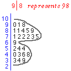

Problem getting a reasonable number of stacks
| The aim in a stem and leaf plot is for the 'canopy' of the leaves — the shape formed by the ends of the stacks of leaves — to be a fairly smooth curve. A little irregularity is inevitable, but the leaves should not have too jagged an outline. The diagram on the right shows this for the Maths mark data. |

The stem and leaf plot shows the distribution of marks well, but also allows any student to determine exactly his/her place in the class. For example, a student who got 57/60 can easily count that 7 students got a higher mark in the class. In most situations however, stem and leaf plots have few advantages over stacked dot plots as graphical displays of data. |